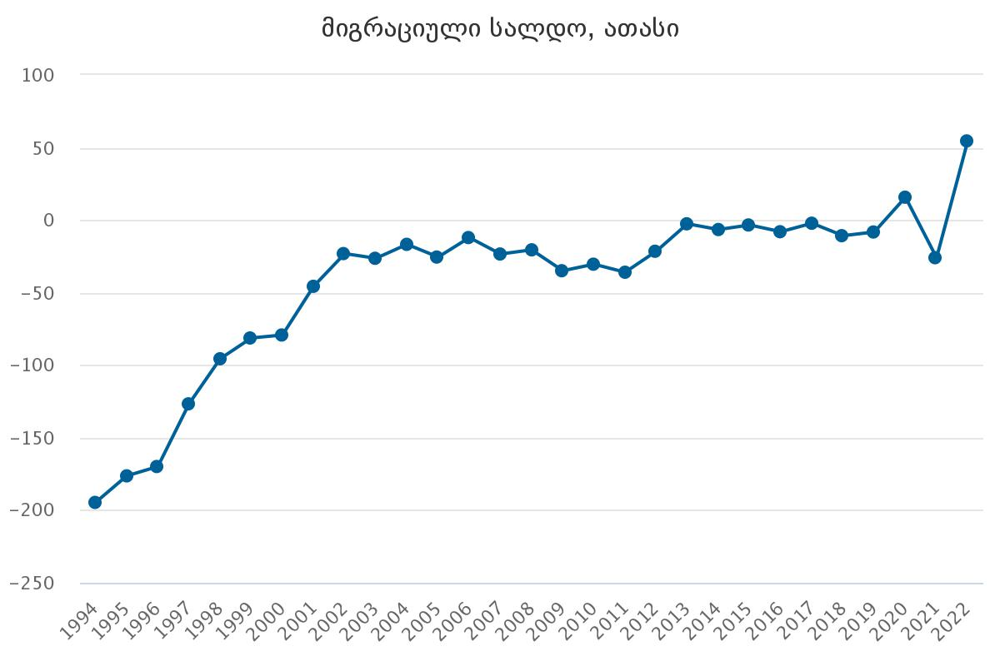
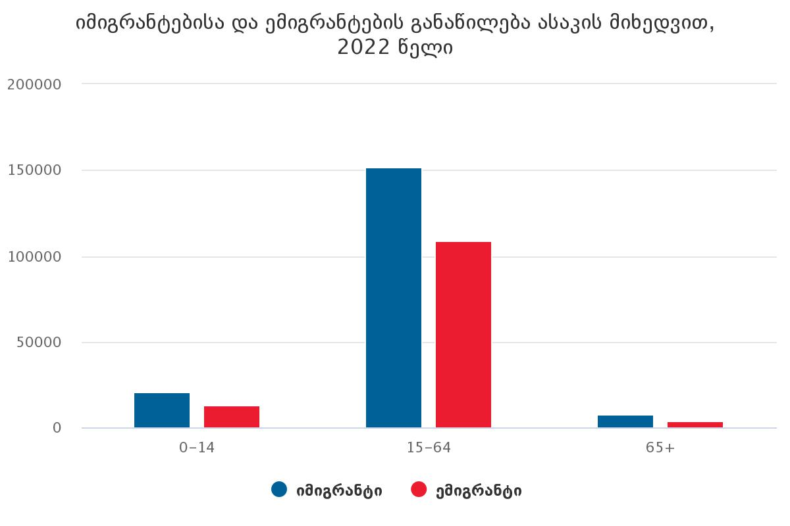

ქვემოთ მოცემულია სხვადასხვა სტატისტიკური მონაცემები საქართველოში მიგრაციასთან დაკავშირებით:
- პირველ გრაფიკზე გამოსახულია მიგრაციის სალდო საქართველოში. აღსანიშნავია, რომ 1900 წლებში მიგრაციის სალდო უარყოფითი იყო, მაგრამ ნელ-ნელა ზრდა დაიწყო, მაგრამ 2022 წლისთვილ მიგრაციის სალდო გახდა დადებითი რუსეთ-ურაინის ომიდან წამოსულ მიგრანტების ხარჯზე. 
- ამ გრაფიკზე მოცემულია იმიგრანტებისა და ემიგრანტეის რიცხოვანი მაჩვენებლები 2022 წლისთვის, ასევე აქ მოცემულია ასაკი, რომელშიც ადმიანი უმეტესად მიგრირდება. ჩანს, რომ მიგრაციას უმეტესად ახალგაზრდები-ზრდასრულები ახდენენ, ხოლო მიგრაციის სალდო დადებითია (ამას განაპირობებს რუსეთ-უკრაინის ომი). 
- საქართველოში უმეტესწილა იმიგრირდება ხალხი სამუშაოს მისაღებად. ჩინეთიდან, ინდოეთიდან ადამიანები ჩამოდიან საქართველოში (სავარაუდოდ საცხოვრებელი პირობები უკეთესი გვაქვს). ასევე საქართველოში ჩამოდიან განათლების და ცხოვრების მიზნით, უმეტესად მოსაზღვრე ქვეყნებიდან. დაწვრილებით იხილეთ ცხრლი:
-
სად მიდის ხალხი საქართველოდან?
საქართველოდან ემიგრაცია საკმაოდ აქტიურია. 86 ათასი ადამიანი 2014 წელს ემიგრირდა. უმეტესობა მიდის რუსეთში და საბერძნეთში, რაც ლოგიკურია, რადგან ეს მოსაზღვრე ქვეყნებია კარგი ხელფასით. დანარჩენი ნაწილი ემიგრირდება ევროპაში.


როგორია მიგრაცია მსოფლიოში?
ქვემოთ მოცემულია პოლიტკური რუკა, რომელზეც გამოსახულია ქვეყნების საშუალო მიგრაციის სალდო 2014 წლისთვის, ასევე მიგრაციული ნაკადების მიმართულებები:

ამ ცხრილიდან ჩანს, თუ სად და რა რაოდენობით მიგრირდება ხალხი: